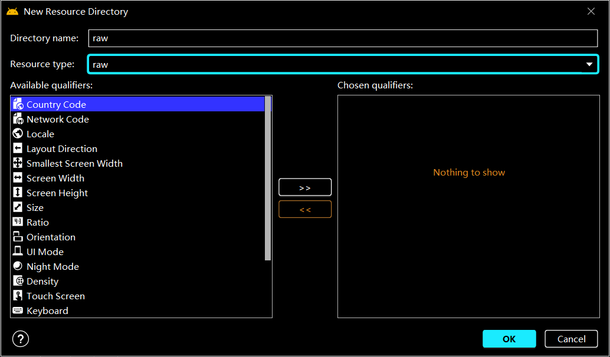

Android-SoundPool播放音效
MediaPalyer虽然可以播放音频，但是资源占用量较高、延迟时间较长、不支持多个音频同时播放等缺点，SoundPool一般用来播放密集、急促、短暂的音效
导入音频文件
Android工程的音频文件存放在raw文件夹

页面布局
没啥好看的1
2
3
4
5
6
7
8
9
10
11
12
<LinearLayout xmlns:android="http://schemas.android.com/apk/res/android"
android:orientation="vertical"
android:gravity="center"
android:layout_width="match_parent"
android:layout_height="match_parent">
<Button
android:text="播放音频"
android:id="@+id/sound_btn1"
android:layout_width="wrap_content"
android:layout_height="wrap_content"/>
</LinearLayout>
程序设计
Android5.0是SoundPool的一个分水岭，在5.0版本SoundPool发生了大变化1
2
3
4
5
6
7//SDK21是SoundPool的一个分水岭
if(Build.VERSION.SDK_INT >= Build.VERSION_CODES.LOLIPOP){
}
else {
}
SDK_INT >= 21
1.创建SoundPool的构建对象1
2
3
4// 创建一个SoundPool的构建对象
SoundPool.Builder builder = new SoundPool.Builder();
// 最大同时播放音频的数量
builder.setMaxStreams(1);
2.创建AudioAttributes的构建对象，它封装音频各种属性的方法，使用它设置音频流的合适的属性并加载到SoundPool的构建对象1
2
3
4
5
6// 封装音频各种属性的方法
AudioAttributes.Builder audioAttriBuilder = new AudioAttributes.Builder();
// 设置音频流的合适的属性
audioAttriBuilder.setLegacyStreamType(AudioManager.STREAM_MUSIC);
// 加载一个AudioAttributes到builder
builder.setAudioAttributes(audioAttriBuilder.build());
3.通过build()方法得到SoundPool对象1
2// 通过构建方法得到SoundPool对象，soundPool是实例变量
soundPool = builder.build();
SDK_INT < 21
1 | // 最大同时播放音频的数量、AudioManager中描述的音频流类型、采样率转换器的质量 |
加载播放
1.加载音频资源，load会返回一个int类型的id，该id用于控制这个音效，开始、卸载等1
2// 加载音频资源，把load返回的id赋值给soundId，该id值用于控制该音效
soundId = soundPool.load(MySoundPool.this,R.raw.lbw,3);
2.音频资源加载完成后，播放音频1
2
3
4
5
6
7
8
9
10
11
12
13
14
15
16// 音频资源加载完成后会调用setOnLoadCompleteListener
soundPool.setOnLoadCompleteListener(new SoundPool.OnLoadCompleteListener() {
// 三个参数：load()方法中的SoundPool对象，load()方法返回的soundId，加载音频资源 的状态(为0时成功)
public void onLoadComplete(SoundPool soundPool, int sampleId, int status) {
if (status == 0){
// 播放
soundPool.play(soundId, //soundLoadId
1.0f, //左侧音量值（范围= 0.0到1.0）
1.0f, //右侧音量值（范围= 0.0到1.0）
1, //优先级(越大越高)
0, //重复播放次数(0是1次，-1无限循环)
1.0f); //播放的速率，范围0.5-2.0(0.5为一半速率，1.0为正常速率，2.0为两倍速率)
}
}
});
卸载并释放
由于一个SoundPool对象可能播放很多个音效，所以在页面销毁时再对它进行释放1
2
3
4
5
6
7 protected void onDestroy() {
super.onDestroy();
// 退出页面时卸载音效，如果播放了多个音效，则根据它们的id一一卸载
soundPool.unload(soundId);
// 释放soundPool对象
soundPool.release();
}
完整程序预览
1 | import androidx.appcompat.app.AppCompatActivity; |
扩展
SoundPool一般用来播放密集、急促、短暂的音效，所以它对一个音频文件最大只播放6秒
若要突破这个限制
- 将声音文件的采样率更改为16000Hz。
- 将音频通道改为单声道，而不是立体声。
- 将声音文件转换为ogg格式。
- 确保经过这些过程后文件小于1mb。